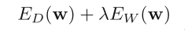
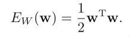
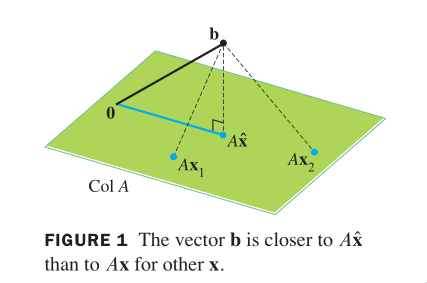
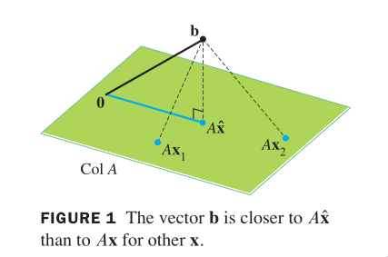

Home
Least squares
regularized least squares
We can add a regularization term to an error function in or‐
der to control over‐fitting, so that the total error function to
be minimized takes the form:

where λ is the regularization coefficient that controls the rela‐
tive importance of the data‐dependent error E_D and the regular‐
ization term E_W.
The simplest form of regularizer:

 Inconsistent systems arise often in applications. When a
solution is demanded and none exists, the best one can do is to
find an x that makes Ax as close as possible to b.
The general least‐squares problem is to find an x that makes ||b‐
Ax|| as small as possible.
The adjective "least‐squares" arises from the fact that ||b ‐
Ax|| is the square root of a sum of squares.
The most important aspect of the least‐squares problem is that no
matter what x we select, the vector Ax will necessarily be in the
column space, Col A. So we seek an x that makes Ax the closest
point in Col A to b. (Of course, if b happens to be in Col A,
then b is Ax for some x, and such an x is a "least‐squares solu‐
tion."
When we talk about spaces, we talk about points and distances be‐
tween points, and opertations allowed between points. What is the
distance between two points in two different spaces? (projection)

‐2‐
Inconsistent systems arise often in applications. When a
solution is demanded and none exists, the best one can do is to
find an x that makes Ax as close as possible to b.
The general least‐squares problem is to find an x that makes ||b‐
Ax|| as small as possible.
The adjective "least‐squares" arises from the fact that ||b ‐
Ax|| is the square root of a sum of squares.
The most important aspect of the least‐squares problem is that no
matter what x we select, the vector Ax will necessarily be in the
column space, Col A. So we seek an x that makes Ax the closest
point in Col A to b. (Of course, if b happens to be in Col A,
then b is Ax for some x, and such an x is a "least‐squares solu‐
tion."
When we talk about spaces, we talk about points and distances be‐
tween points, and opertations allowed between points. What is the
distance between two points in two different spaces? (projection)

‐2‐
 Such an xˆ is a list of weights that will build bˆ out of the
columns of A. Think of multiplying these weights to each corre‐
sponding column of A, and then sum up each row of A to get Axˆ.
What is a column space?
Col A is the set of all linear combinations of the columns of A.
Such an xˆ is a list of weights that will build bˆ out of the
columns of A. Think of multiplying these weights to each corre‐
sponding column of A, and then sum up each row of A to get Axˆ.
What is a column space?
Col A is the set of all linear combinations of the columns of A.
 What is a null space?
Nul A is the set of all solutions of the homogeneous equation
Ax=0.
What is a null space?
Nul A is the set of all solutions of the homogeneous equation
Ax=0.